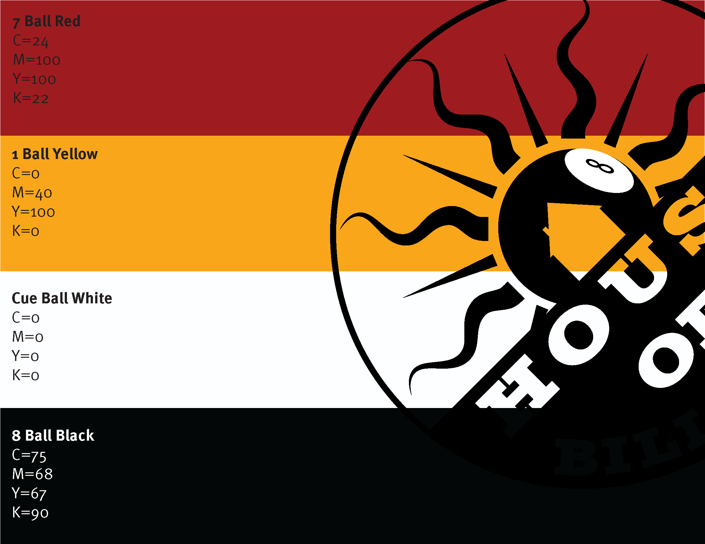
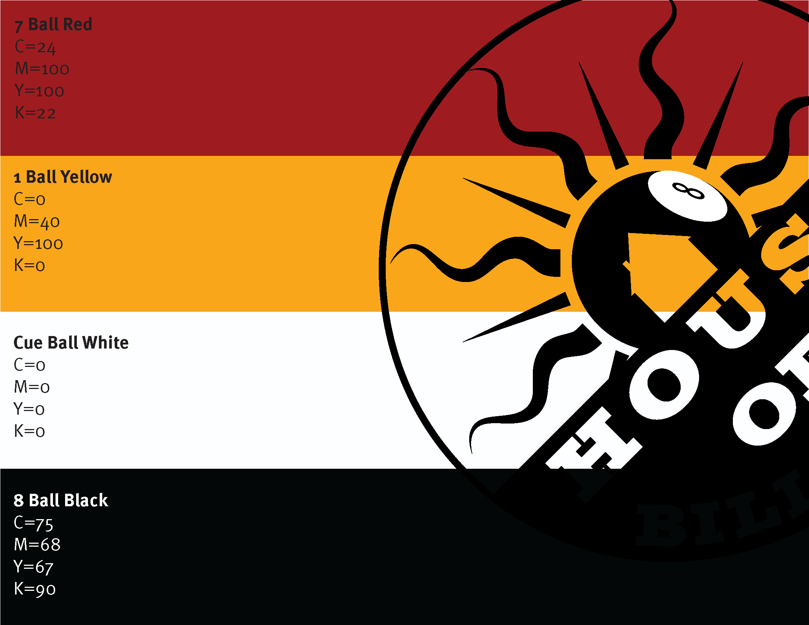

House of Billards Branding
This branding project is a concept piece for the House of Billiards, a small pool hall and bar located in California. The goal of the project was to give the brand a fresh new look while staying true to the core values of the company.
Initially, House of Billiards had little brand identity, and what little branding they had was inconsistent. They had two logos that were only used for their social media profile picture and pint glasses in the bar. Their previous branding did not effectively attract new patrons, which was a missed opportunity for a pool hall with the potential to be a popular spot for the 20-40-year-old demographic. The brand wanted to convey a comfortable, warm, and vintage pool hall atmosphere, but lacked the necessary visual elements to achieve this. The objective of the rebrand was to create a brand that would communicate the message "Hey, we have a nice place to hang out! Come have a beer and play some pool!"
My process began with examining the interior design of the bar, which was inspired by late Antebellum era New Orleans design, and the exterior architecture that shared similar characteristics. The combination of the New Orleans theme and the name "House of Billiards" reminded me of the song "House of the Rising Sun," which is set in New Orleans. This inspired me to create sun imagery that would complement the existing decor.
The final design's art style takes inspiration from an art style used by the restaurant chain "McMenamins," which uses a style called "historical surrealism." I chose the colors based on real-world cues - yellow from the 1 billiard ball and red from the sunrise, but adjusted to create a more surreal feel. The fonts chosen were intended to invoke the feel of hand-painted signs from the late Antebellum period.
In the end, I successfully built a brand for House of Billiards that conveys a welcoming environment, inviting patrons to come in and enjoy a game of pool while enjoying a cold beer.